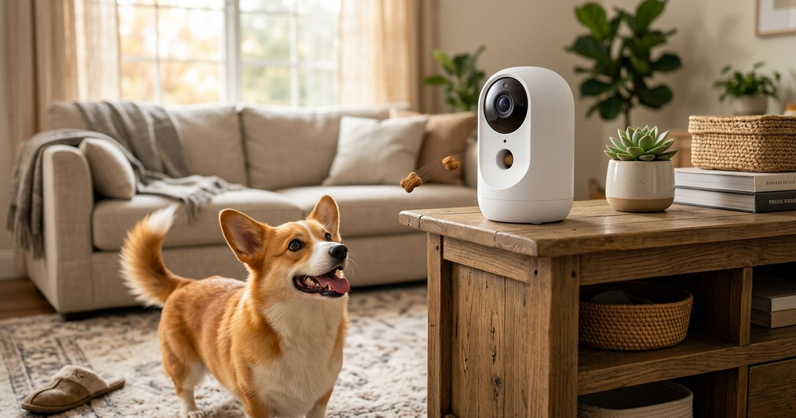
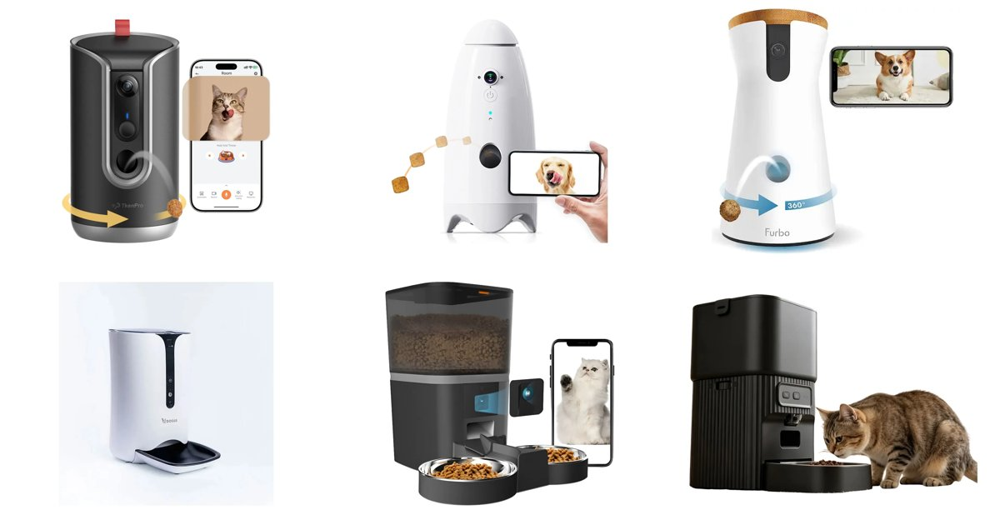
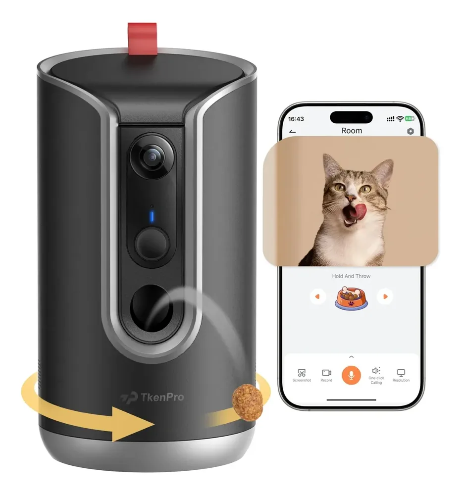
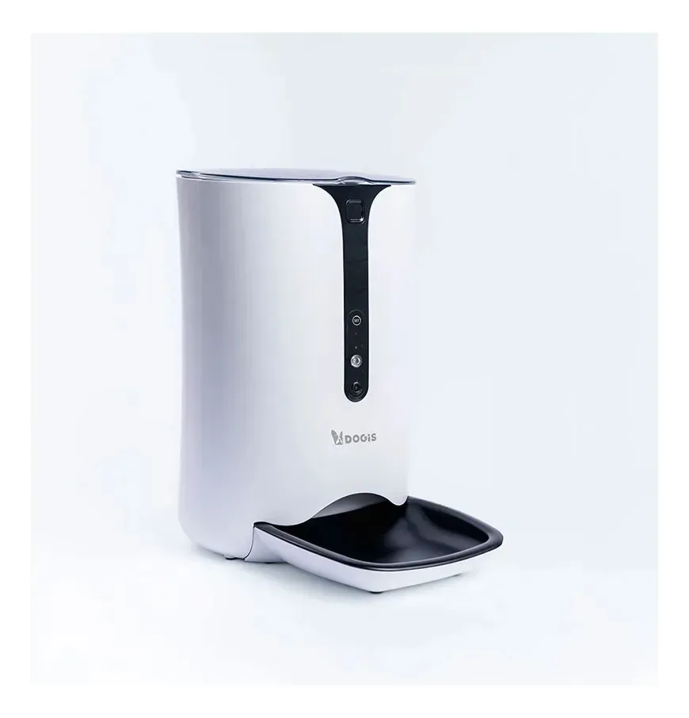
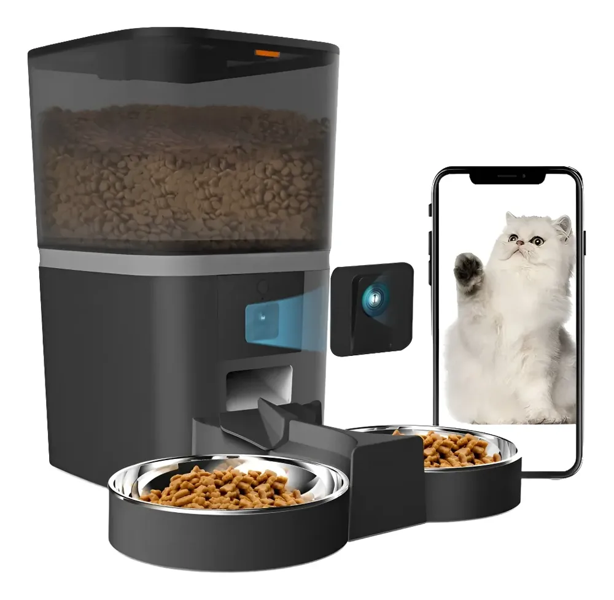
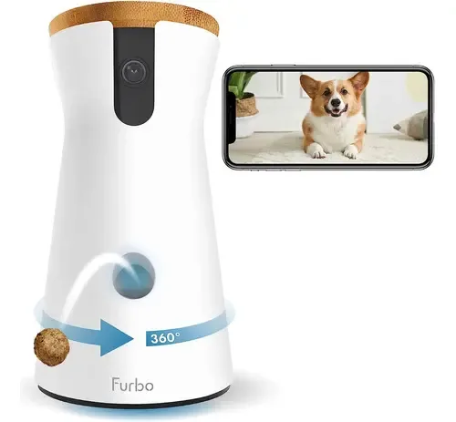
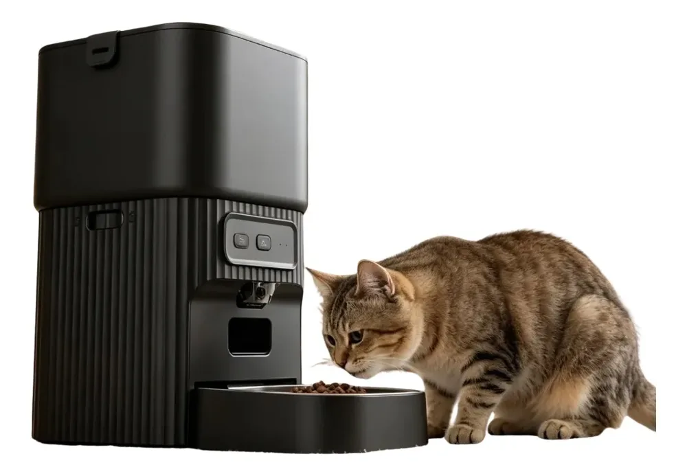
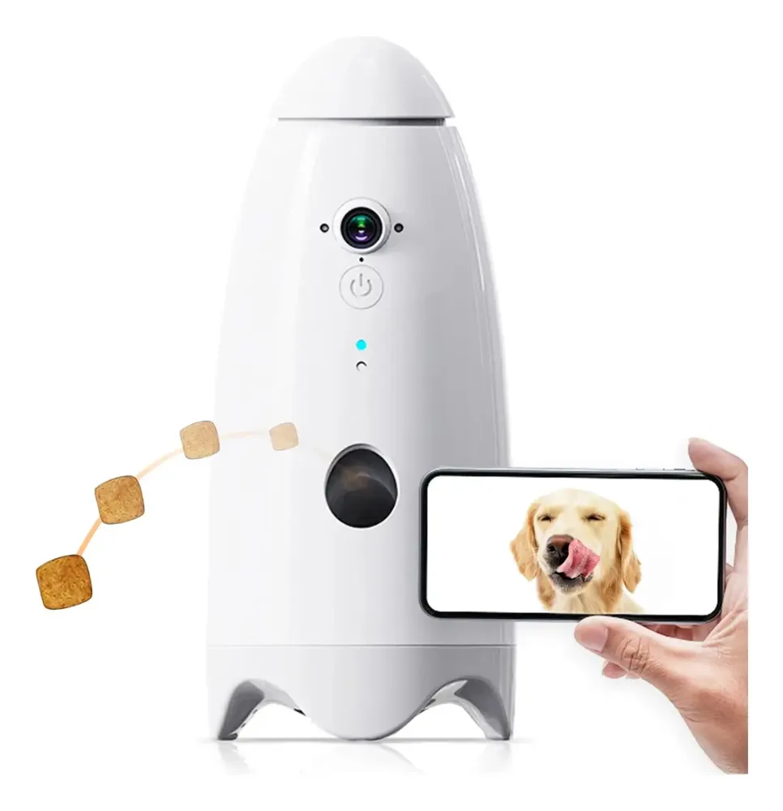

A melhor câmera pet com dispensador de petisco, entre as que comparamos, é a Câmera Pet 2K com petiscos da loja oficial New Pet: imagem 2K, giro de 355°, visão noturna, conversa por voz e reservatório de 0,5 litro para lançar petiscos pelo app, por R$ 598 no Mercado Livre (preço de 15/11/2026). Se você quer o aparelho mais confiável e não se importa de liberar ração em vez de petisco, o alimentador com câmera Dogis Tech 6L tem nota 4,8 em 28 avaliações e 365 dias de garantia, por R$ 799. O mais barato com câmera é o Root Tech 6L, por R$ 449,99, e o premium é o Furbo 360, por R$ 1.251,30. O dispensador vale a pena para quem quer interagir com o pet de longe, não só olhar.
Câmera Pet 2K com petiscos, vendida pela loja oficial New Pet, com giro de 355° e visão noturna.Link de afiliado — sem custo extra para você.
Ver preço no Mercado Livre →Escolha rápida
- Melhor câmera com petisco: Câmera Pet 2K com petiscos, loja oficial New Pet (R$ 598)
- Mais confiável (alimentador com câmera): Dogis Tech 6L (R$ 799, nota 4,8 em 28 avaliações, 1 ano de garantia)
- Mais barato com câmera: Root Tech 6L (R$ 449,99, nota 4,5 em 23 avaliações)
- Premium para cães: Furbo Dog 360 (R$ 1.251,30)
- Alimentador com Wi-Fi 5 GHz: Hipertech 4L (R$ 499,99)
- Dispensador com visão de 180°: PetNow (R$ 1.015,84)
Os dois deixam você ver o pet pelo celular e soltar comida à distância, mas servem para coisas diferentes:
| Câmera com dispensador de petisco | Comedouro (alimentador) com câmera | |
|---|---|---|
| O que libera | Petisco pequeno, um por vez, lançado ou soltado | Ração, em porções programadas |
| Reservatório | Pequeno: 0,2 a 0,5 litro | Grande: 4 a 6 litros |
| Programa refeições | Não | Sim, por horário |
| Câmera | Foco principal, muitas giram 360° | Fixa, apontada para o pote |
| Melhor para | Brincar, recompensar e acalmar o pet à distância | Garantir as refeições e conferir se o pet comeu |
| Modelos da lista | Newpet 2K, Furbo 360, PetNow | Dogis Tech, Root Tech, Hipertech |
Se o pet fica sozinho o dia todo e você quer resolver alimentação e monitoramento com um aparelho só, o comedouro com câmera costuma ser a escolha mais prática. Se ele já tem comedouro e o objetivo é interagir, a câmera com petisco é a mais divertida.
Preços consultados no Mercado Livre em 15/11/2026. Eles mudam com frequência, principalmente na Black Friday, então confira no link antes de comprar.
| Modelo | Tipo | Câmera | Reservatório | Preço | Wi-Fi | Nota no ML | Garantia | |
|---|---|---|---|---|---|---|---|---|
| Newpet 2K | Petisco | 2K, giro 355° | 0,5 L | R$ 598 | 2,4 e 5 GHz | Sem avaliações | 30 dias | Ver preço |
| Dogis Tech 6L | Ração | HD 720p fixa | 6 L | R$ 799 | 2,4 GHz | 4,8 (28) | 365 dias | Ver preço |
| Root Tech 6L | Ração | Full HD fixa | 6 L | R$ 449,99 | 2,4 GHz | 4,5 (23) | 30 dias | Ver preço |
| Furbo Dog 360 | Petisco | Full HD, giro 360°, zoom 4x | 0,5 L | R$ 1.251,30 | Sim | 5,0 (1) | Não informada | Ver preço |
| Hipertech 4L | Ração | 1080p fixa | 4 L | R$ 499,99 | 2,4 e 5 GHz | Sem avaliações | Não informada | Ver preço |
| PetNow | Petisco | 1080p, visão 180° | 200 g | R$ 1.015,84 | 2,4 GHz | Sem avaliações | 3 meses | Ver preço |

Os dados de cada modelo vêm do anúncio no Mercado Livre e das avaliações publicadas por compradores. Não testamos os aparelhos; veja como escolhemos.

É a câmera com petisco mais completa pelo menor preço da lista. Tem imagem 2K, giro horizontal de 355° com lente grande angular, visão noturna por infravermelho e conversa por voz nos dois sentidos. O reservatório de 0,5 litro aceita petiscos de 7 a 15 mm, que você lança pelo app. Conecta tanto em Wi-Fi 2,4 GHz quanto em 5 GHz e funciona com Alexa e Google. É vendida pela loja oficial New Pet, embora o aparelho venha com a marca TkenPro.
| Preço | R$ 598 ou 12x de R$ 57,83 |
|---|---|
| Câmera | 2K, giro horizontal de 355°, visão noturna, detecção de movimento e latido |
| Petiscos | Reservatório de 0,5 litro, petiscos de 7 a 15 mm, lançados pelo app |
| Conectividade | Wi-Fi 2,4 e 5 GHz, Alexa e Google, áudio bidirecional |
| Gravação | Cartão de memória de até 128 GB (não incluso) ou nuvem com assinatura; vídeos automáticos de destaque exigem assinatura |
| Medidas e peso | 13,4 x 13,4 x 24 cm; 0,86 kg |
| Avaliações | Ainda sem avaliações (1 vendido; 2 unidades disponíveis em 15/11) |
| Vendedor e garantia | Loja oficial New Pet (+50 mil vendas); 30 dias de garantia de fábrica |
🐾 Câmera Pet 2K com petiscos da loja oficial New Pet: veja o preço de hoje.
Ver preço no Mercado LivreLink de afiliado: podemos receber uma comissão por compras feitas através deste link, sem custo adicional para você.

Não lança petisco: libera ração em porções, pelo horário programado ou na hora, pelo app. Em troca, é o aparelho mais confiável da lista. Tem nota 4,8 em 28 avaliações, é vendido pela loja oficial da marca e tem 365 dias de garantia de fábrica, a maior da lista. A câmera tem visão noturna e microfone para falar com o pet, e o comedouro funciona com Alexa, Siri e Google. O motor aceita grãos de até 40 mm, então serve até para cachorro grande.
| Preço | R$ 799 (R$ 792 com o cupom por seguir a loja) |
|---|---|
| Câmera | HD 720p com visão noturna, áudio bidirecional |
| Reservatório | 6 litros (cerca de 3,5 kg de ração seca), grãos de até 40 mm |
| Conectividade | Wi-Fi 2,4 GHz, Alexa, Siri e Google |
| Energia | Cabo USB 5V/2A com 3 pilhas D de reserva. Não vem fonte de tomada nem pilhas; com as pilhas, câmera e Wi-Fi desligam para economizar e só a ração continua saindo |
| Medidas e peso | 21 x 39 x 25 cm; 2,8 kg |
| Avaliações | 4,8 de 5 em 28 avaliações |
| Vendedor e garantia | Loja oficial Dogis (+500 vendas); 365 dias de garantia de fábrica |
"Tem uma câmera muito nítida, inclusive a noite. Consigo monitorar minhas yorks filhotes de qualquer lugar, inclusive até adverti-las pelo microfone. Faz dosagem da ração e nas horas..."
★★★★★ comprador, Mercado Livre · 9 pessoas acharam útil"Aprovadíssimo esse comedouro. Câmera nítida. E só de não entupir a saída com os grãos isso é ótimo."
★★★★★ comprador, Mercado Livre🐶 Dogis Tech 6L com câmera e 1 ano de garantia: veja o preço de hoje.
Ver preço no Mercado LivreLink de afiliado: podemos receber uma comissão por compras feitas através deste link, sem custo adicional para você.

É o jeito mais barato da lista de ver o pet e soltar comida pelo celular. A câmera transmite em Full HD, tira foto e grava vídeo, e o áudio bilateral permite falar com o pet. O app é o Tuya, então a configuração segue o nosso passo a passo do app Tuya. O reservatório de 6 litros e as pilhas de reserva garantem as refeições em viagens e quedas de energia.
| Preço | R$ 449,99, consultado em 17/11/2026 |
|---|---|
| Câmera | Full HD 1080p, foto, vídeo e áudio bilateral |
| Reservatório | 6 litros (cerca de 3 kg), até 20 porções por refeição, ração seca de até 10 mm |
| Conectividade | App Tuya, Wi-Fi 2,4 GHz, Google Assistente |
| Energia | Tomada, com pilhas AA de reserva |
| Avaliações | 4,5 de 5 em 23 avaliações e +50 vendidos |
| Vendedor e garantia | TechnologyRoot (MercadoLíder Platinum, +10 mil vendas); 30 dias de garantia do vendedor |
O resumo das opiniões do Mercado Livre diz que o produto "é considerado um bom custo-benefício", mas cita "alguns problemas como o áudio ruim e dificuldades com a câmera à noite".
"Produto incrível e tem ajudado inclusive minha gata glutona a reduzir seu peso... funciona com um relógio suíço."
★★★★★ comprador, Mercado Livre💰 Root Tech 6L, o alimentador com câmera mais barato da lista: veja o preço de hoje.
Ver preço no Mercado LivreLink de afiliado: podemos receber uma comissão por compras feitas através deste link, sem custo adicional para você.

É a câmera com petisco mais famosa do mundo, feita especialmente para cães. Gira 360°, transmite em Full HD com zoom de 4x, tem sensor de latido e lança o petisco pelo ar, o que vira brincadeira para o cachorro. Funciona com Alexa, inclusive para agendar o lançamento de petiscos. Os alertas inteligentes (latido, choro, correria) e a gravação em nuvem fazem parte do serviço da Furbo, que costuma ser por assinatura.
| Preço | R$ 1.251,30 ou 10x de R$ 125,13 sem juros (R$ 1.212,59 com Meli+) |
|---|---|
| Câmera | Full HD 1080p, giro de 360°, zoom de 4x, visão noturna, sensor de latido |
| Petiscos | Reservatório de 500 ml, lançador de petiscos |
| Conectividade | Wi-Fi, app Android e iOS, Alexa |
| Medidas | 12 x 12 x 22,5 cm |
| Avaliações | 5,0 em 1 avaliação (+5 vendidos); "última em estoque" em 15/11 |
| Vendedor | NOBREGOD (+100 vendas), revendedor, não loja oficial |
🐕 Furbo Dog 360, a câmera com petisco mais famosa: veja o preço de hoje.
Ver preço no Mercado LivreLink de afiliado: podemos receber uma comissão por compras feitas através deste link, sem custo adicional para você.

Alimentador de 4 litros com câmera 1080p e visão noturna, áudio bidirecional e gravação de voz de até 10 segundos. O diferencial é conectar em Wi-Fi 2,4 e 5 GHz, o que evita o problema mais comum de configuração desses aparelhos. A tampa tem vedação hermética e caixa de secagem para manter a ração crocante.
| Preço | R$ 499,99 ou 9x de R$ 55,55 sem juros |
|---|---|
| Câmera | HD 1080p com visão noturna, fotos e clipes pelo app |
| Reservatório | 4 litros, tampa hermética e caixa de secagem |
| Conectividade | Wi-Fi 2,4 e 5 GHz, iOS e Android, áudio bidirecional |
| Energia | Tomada, com pilhas de reserva |
| Avaliações | Ainda sem avaliações neste anúncio |
| Vendedor | Hiper Technology (MercadoLíder, +10 mil vendas) |
📶 Hipertech 4L com câmera 1080p e Wi-Fi 5 GHz: veja o preço de hoje.
Ver preço no Mercado LivreLink de afiliado: podemos receber uma comissão por compras feitas através deste link, sem custo adicional para você.

Dispensador de petiscos em formato de foguete, com câmera 1080p de visão ampla de 180°, áudio bidirecional e alertas de som e movimento. Pelo app você lança petiscos e fala com o pet. O reservatório comporta cerca de 200 g. Tem o mesmo papel do Furbo por um preço menor, mas o anúncio ainda não tem avaliações e o prazo de entrega inclui 22 dias de preparação.
| Preço | R$ 1.015,84 (de R$ 1.069,31) ou 10x de R$ 101,58 sem juros |
|---|---|
| Câmera | 1080p, visão ampla de 180°, alertas de áudio e movimento |
| Petiscos | Reservatório de cerca de 200 g |
| Conectividade | Wi-Fi 2,4 GHz, app com áudio bidirecional |
| Energia | Cabo elétrico (tomada) |
| Avaliações | Ainda sem avaliações neste anúncio |
| Vendedor e garantia | PetNow (+100 vendas); 3 meses de garantia do vendedor; entrega com 22 dias de preparação |
🚀 Dispensador de petiscos PetNow com câmera: veja o preço de hoje.
Ver preço no Mercado LivreLink de afiliado: podemos receber uma comissão por compras feitas através deste link, sem custo adicional para você.
Se o objetivo é só ver o pet e falar com ele, o dispensador é um custo que talvez você não use. Uma câmera pet comum, com áudio e visão noturna, custa bem menos e resolve. Veja as opções no comparativo das 6 melhores câmeras para monitorar pet.
| Perfil de uso | O que escolher |
|---|---|
| Quer recompensar comportamento calmo à distância | Câmera com dispensador de petisco |
| Pet fica sozinho o dia todo e precisa comer no horário | Comedouro com câmera |
| Só quer ver e falar com o pet | Câmera pet comum, sem dispensador |
| Gato que não liga para petisco | Câmera comum ou comedouro com câmera |
Funciona, mas com menos entusiasmo do que com cães. Muitos gatos se assustam com o barulho do lançamento nas primeiras vezes, e alguns simplesmente ignoram o petisco. Para gatos, prefira modelos que soltam o petisco em vez de arremessá-lo longe, use petiscos secos e pequenos e faça a apresentação com você em casa. Se o gato não liga para petisco, um comedouro com câmera costuma ser mais útil, porque a ração ele come de qualquer jeito.
Nem todo petisco funciona no mecanismo de disparo. Petiscos muito grandes ou úmidos entopem o compartimento, e os muito pequenos ou esfarelados acumulam resíduo e pedem limpeza frequente. Na prática:
Nos comedouros com câmera, a regra é a da ração: use o tamanho de grão indicado (até 10 mm no Root Tech, até 40 mm no Dogis Tech).
O dispensador de petisco da câmera libera pequenas quantidades pontuais, sob comando do tutor, e não substitui um comedouro automático com timer para refeições completas. Se o que você precisa é garantir as refeições, veja os 6 melhores comedouros automáticos para cães e gatos, que incluem um modelo com câmera por menos de R$ 300.
Selecionamos seis modelos no Mercado Livre em 15/11/2026: três câmeras com dispensador de petisco e três comedouros com câmera, porque no Brasil as câmeras dedicadas a petisco ainda são poucas e muitas vêm de vendedores internacionais. Descartamos anúncios de vendedores internacionais, com pouco estoque crítico ou reputação ruim, com uma exceção sinalizada no texto (o Furbo, que é a principal referência da categoria). Para cada modelo registramos preço, câmera, reservatório, conectividade, energia, avaliações, reputação do vendedor e garantia direto no anúncio, e citamos comentários de compradores quando havia. Não testamos os aparelhos. A ordem considera confiabilidade, custo-benefício e o quanto o aparelho atende quem busca uma câmera que solta petisco.
Para lançar petisco e brincar com o pet de longe, a Câmera Pet 2K com petiscos da New Pet entrega a melhor imagem e o menor preço entre as câmeras com dispensador. Se você quer um aparelho com histórico comprovado, o Dogis Tech 6L libera ração com câmera, tem nota 4,8 e 1 ano de garantia. Com orçamento curto, o Root Tech 6L resolve por R$ 449,99. O Furbo 360 é a escolha de quem quer a marca referência e aceita pagar mais. E se o objetivo é só ver o pet, volte ao guia completo de câmera para monitorar pet: o dispensador pode ser custo extra.
Entre os modelos que comparamos, a Câmera Pet 2K com petiscos vendida pela loja oficial New Pet: imagem 2K, giro de 355°, visão noturna, Wi-Fi 2,4 e 5 GHz e reservatório de 0,5 litro, por R$ 598 no Mercado Livre em 15/11/2026. A opção premium é o Furbo Dog 360, por R$ 1.251,30.
Vale para quem pretende interagir com o pet pelo app, recompensando bom comportamento à distância. Se o uso principal é só ver e ouvir o pet, uma câmera comum, sem dispensador, custa menos e resolve.
A câmera com petisco solta petiscos pequenos, um por vez, sob comando do tutor, e tem reservatório de 0,2 a 0,5 litro. O comedouro com câmera libera ração em porções programadas, tem reservatório de 4 a 6 litros e garante as refeições. Na lista, Newpet 2K, Furbo e PetNow são câmeras com petisco; Dogis Tech, Root Tech e Hipertech são comedouros com câmera.
Nesta lista, o Root Tech 6L, por R$ 449,99, com câmera Full HD, app Tuya e nota 4,5 em 23 avaliações. No nosso ranking de comedouros automáticos há também um alimentador de 6 litros com câmera por R$ 299,69.
Não. Ele libera pequenas quantidades pontuais sob comando do tutor e não programa refeições completas. Para isso, use um comedouro automático com timer, que pode ter câmera também.
Não. Use petiscos secos, pequenos e de formato regular, dentro da faixa do fabricante; a Newpet 2K, por exemplo, pede de 7 a 15 mm. Petiscos grandes ou úmidos entopem, e os esfarelados acumulam resíduo.
Funciona, mas muitos gatos se assustam com o lançamento no começo ou ignoram o petisco. Apresente o aparelho com você em casa, use petiscos pequenos e, se o gato não se interessar, prefira um comedouro com câmera.
Para ver ao vivo, falar e lançar petisco, normalmente não. Recursos extras como gravação em nuvem, vídeos automáticos de destaque e alertas com inteligência artificial costumam exigir assinatura, como na Newpet 2K e no Furbo. A Newpet 2K aceita cartão de memória para gravar sem mensalidade.
A maioria só funciona em 2,4 GHz. Nesta lista, a Newpet 2K e o comedouro Hipertech aceitam também 5 GHz. Se o seu aparelho não conecta, veja o passo a passo de configuração no app Tuya.
Quando você só quer ver o pet e falar com ele, ou quando o pet não se interessa por petiscos. Nesses casos, uma câmera pet comum é mais barata, e um comedouro com câmera é mais útil se a preocupação é a alimentação.
Escrito por Nildo Alves para o Smart Pet Gadgets. Preços e especificações vêm dos anúncios no Mercado Livre em 15/11/2026 e podem mudar. Veja nossa política editorial e como verificamos as fontes citadas neste artigo.
Nildo Alves — curadoria de produtos pet no Smart Pet Gadgets. Pesquisa e compara produtos para cães e gatos, cruzando especificações de fabricante com boas práticas veterinárias e dados de mercado.
Sobre o Smart Pet Gadgets · Contato · Política editorial e de afiliados